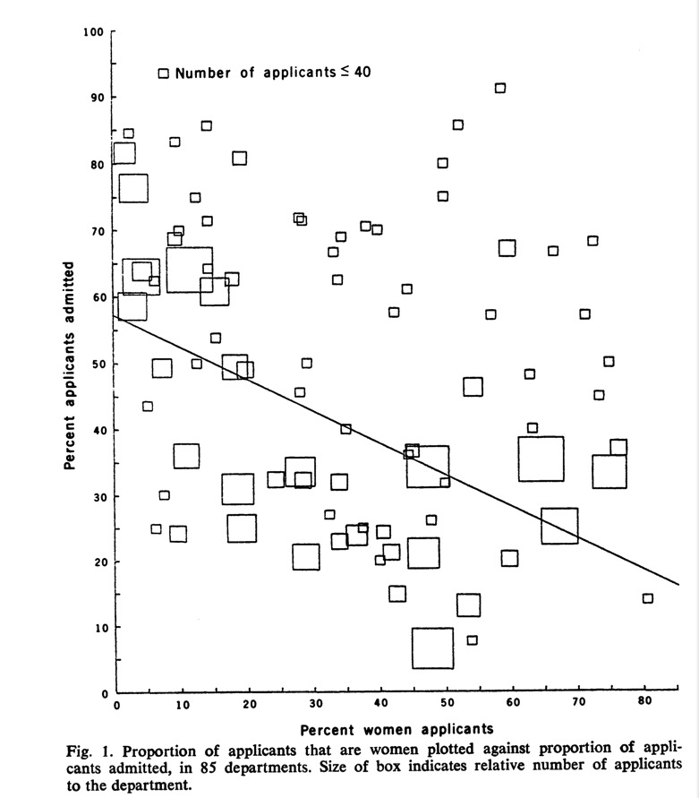

Personal characteristics: age, gender, race/ethnicity, SES, marital status.
6.2 Place
Place characteristics: Geographic dispersion: location in neighborhood, country, hospital.
6.2.1 Example of person and place: John Snow
In 1855, John Snow made the following cross-tabulation showing the rate of cholera among customers of 2 different London water providers. In 1852, Lambeth changed its intake pipe on the Thames to be upstream to avoid sewage contamination of the water. Southwark and Vauxhall kept the same intake pipe. John Snow evaluated whether there were any systematic differences between houses getting water from one company versus the other.
“The mixing of the [water] supply is of the most intimate kind. The pipes of each Company go down all the streets, and into nearly all the courts and alleys. A few houses are supplied by one Company and a few by the other, according to the decision of the owner or occupier at the time when the Water Companies were in active competition. In many cases, a single house has a supply different from that on either side. Each company supplies both rich and poor, both large houses and small; there is no difference either in the condition or occupation of the persons receiving the water of the different Companies. … It is obvious that no experiment could have been devised which would more thoroughly test the effect of water supply on the progress of cholera than this…. [The new intake pipe] divided into two groups without their choice, and, in most cases, without their knowledge; one group being supplied with water containing the sewage of London, and, amongst it, whatever might have come from the cholera patients, the other group having water quite free from such impurity.” (John Snow, 1855, On the Mode of Communication of Cholera London: John Churchill, 2nd edition. Reprinted in Snow on Cholera, London: Humphrey Milford; Oxford University Press, 1965)
Company
Number of houses
Cholera deaths
Death rate per 10,000
Southwark and Vauxhall
40,046
1263
315
Lambeth
26,107
98
37
6.3 Time
Time variation: secular trends, cyclical variation (season/month/day of week/time of day), birth cohorts.
Example: A study in a children’s hospital emergency department in Colorado from 2005–2011 compared the proportion of marijuana ingestions by young children before and after medical marijuana legalization in October 2009. They looked at 1378 patients below age 12 evalu- ated for unintentional ingestions: 790 patients until September 30, 2009, and 588 patients on or after October 1, 2009. Out of 790 patients evaluated for unintentional ingestions before 9/30/09, none were related to marijuana exposure (0%; 95% CI, 0%–0.6%). Out of 588 patients evaluated for unintentional ingestions on or after 10/1/09, 14 were related to marijuana exposure (2.4%; 95% CI, 1.4%–4.0%), a significant increase (P <.001). Out of 14 unintentional marijuana exposures, 8 involved medical marijauana, and 7 were from food products. (Wang GS, Roosevelt G, Heard K., Pediatric Marijuana Exposures in a Medical Marijuana State. JAMA Pediatr. 2013 May 27:1–4.)
What’s the research question? What’s the study design? Is the study design valid for answering their research question?
A small number of sick people are generally responsible for a large proportion of health care spending. Employers try to reduce their health care costs by reducing the costs of the sickest members of their insurance pools. A medication therapy management (MTM) program invited high-risk members in a large employer group. The MTM treatment group comprised 2250 members who accepted, and the control group comprised 2250 members who decliend the invitation but were matched to the treatment group on unspecified characteristics. The MTM and control groups were compared for the year before versus after the MTM program invitations. The researchers assessed several measures of health care usage and spending, as well as medication possession ratios (MPRs) for 5 chronic conditions. Results: “MTM members significantly reduced their plan-paid health care costs by 10.3% or $977, compared with an increase of 0.7% or $62 in the control group (P=0.048). Inpa- tient visits in the MTM group decreased by 18.6%, while the control group experienced an increase of 24.2% (P < 0.001). While both groups had decreases in ER visits, the groups were not significantly different (P=0.399). Average days supply for the MTM group increased by 72.7 days over baseline; for the control group, it decreased by 111.1 days (P<0.001). MTM members with hypertension and dyslipidemia had pre-post in- creases in MPR of 2.29% and 2.10%, respectively, while the control group had decreases of 2.31% and 2.61% (both P < 0.001). The mean MPRs for members with diabetes, depression, and asthma did not change in either group. Program costs per patient in 2009 were estimated to be $478. The program had a return on investment (ROI) of 2.0 in 2009.” Moore JM, Shartle D, Faudskar L, Matlin OS, Brennan TA. Impact of a patient-centered pharmacy program and intervention in a high-risk group. J Manag Care Pharm. 2013 Apr;19(3):228–36. (a) What’s the research question? (b) What’s the study design? (c) Is the study design valid for answering their research question? (d) Compare this study with the above study.
6.4 Non-identifiability
Non-identifiability is a statistical term relating to the inability to separate the impact of many different inter-related factors. The extreme of non-identifiability: two factors completely deter- mine the third. Example from the book: calendar year, age, and year of birth. Also true for inter-related factors such as race/ethnicity, income, and education.
6.5 Bias
Bias arises whenever there are systematic differences between the two groups (e.g., cases vs. controls, exposed vs unexposed, treatment vs. controls) that could explain or conceal differences between groups. - Bias towards the null - Bias away from the null
When proposing potential biases, specify the type of bias (e.g., information, selection), how and in what direction the bias would impact the findings, and, if possible, how the researchers could prevent the bias. The term “bias” without further elaboration is meaningless.
6.5.1 Selection bias
Selection bias may partially explain research findings, if the two groups (cases vs. controls, exposed vs unexposed, treatment vs. controls) are selected in different ways, or if there is differential attrition.
6.5.2 Information bias
Information bias includes many types of bias, including observer, responder, instrument, and recall bias.
If measurement in the two groups have systematic differences, that could explain the research findings. Observer and responder bias can be addressed through blinding.
6.5.3 Potential Confounding
Confounders are associated with both the outcome and the predictor and not an intermediate variable, so observed effect may instead be entirely attributable to the confounder’s relationship with both factors. Explain how you know that a potential confounder is associated with both outcome and the predictor. Limit your discussion to a relatively small number of factors that are likely to have large impacts.
Lack of a control group or a poor choice of a control group are threats to internal validity, but they are not confounders. Explain why it’s important to have a control group, and how the lack of a (good) control group may explain the results.
6.5.4 Adding a third variable to uncover bias
We can reveal bias by stratifying data. Estimating associations after stratifying data can reveal important patterns: cohort effects and Simpson’s paradox.
Simpson’s paradox refers to the situation where an apparent relationship between two variables reverses after stratifying on a third variable.
6.7.1 Berkeley graduate admissions data
Berkeley gender bias case is a classic example of Simpson’s paradox. (Bickel, P. J., Hammel, E. A., and O’Connell, J. W. (1975) Sex bias in graduate admissions: Data from Berkeley. Science, 187, 398–403)
Here are the admission rates from fall 1973 for graduate school at UC Berkeley. Men seem to be more likely to be admitted, so Berkeley was afraid of being sued. They were never sued, however.
Applicants
Admitted
Men
8442
44%
Women
4321
35%
After stratifying by department, here are the admission rates:
Department
Men applicants
Men admitted
Women applicants
Women admitted
A
825
62%
108
82%
B
560
63%
25
68%
C
325
37%
593
34%
D
417
33%
375
35%
E
191
28%
393
24%
F
272
6%
341
7%
Total
2590
46%
1835
30%

Bickel, P. J., Hammel, E. A., and O’Connell, J. W. (1975) Sex bias in graduate admissions: Data from Berkeley. Science, 187, 398--403
Men applicants
Men admitted
Women applicants
Women admitted
Arts
4100
1300
32%
8250
3150
38%
Sciences
8200
5100
62%
2900
1900
66%
Total
12300
6400
52%
11150
5050
45%
The reason that Simpson’s paradox occurred here is that more women apply to more competitive departments (e.g., the humanities) than men do, so women experience lower overall admissions rates than men due to their preference for these more competitive departments. Disaggregated by department, we see that women do not experience a lower admissions rate. The reason that the science departments are less competitive is that the applicants tend to be self-selected, having had more attrition at the undergraduate level, so the applicant pool is overall probably more suitable for graduate school than the applicant pool for non-science departments which have less attrition among undergraduates.
I’ve looked for the source of the above plot to reproduce it, but the most detailed data are here (https://discovery.cs.illinois.edu/dataset/berkeley/). It seems Berkeley doesn’t release the full set.
B =read.csv("berkeley.csv")xtabs(~Admission + Major + Gender, data=B)
, , Gender = F
Major
Admission A B C D E F Other
Accepted 89 17 201 131 94 25 937
Rejected 19 8 392 244 299 316 1549
, , Gender = M
Major
Admission A B C D E F Other
Accepted 825 353 120 138 53 22 2227
Rejected 313 207 205 279 138 351 3211
We can reproduce these numerical results in R using the version from the datasets package. Sum up all the values for males and females separately.
This is what the dataset looks like. It’s a cross-tabulation in 3 dimensions: admission status, gender, and department.
UCBAdmissions
, , Dept = A
Gender
Admit Male Female
Admitted 512 89
Rejected 313 19
, , Dept = B
Gender
Admit Male Female
Admitted 353 17
Rejected 207 8
, , Dept = C
Gender
Admit Male Female
Admitted 120 202
Rejected 205 391
, , Dept = D
Gender
Admit Male Female
Admitted 138 131
Rejected 279 244
, , Dept = E
Gender
Admit Male Female
Admitted 53 94
Rejected 138 299
, , Dept = F
Gender
Admit Male Female
Admitted 22 24
Rejected 351 317
We can use the apply function to sum up across the first two dimensions of the cross-tabulation: the rows (admits) and columns (gender), so we have just a 2x2 table with admission numbers (rows) by gender (columns).
(all=apply(UCBAdmissions, c(1, 2), sum))
Gender
Admit Male Female
Admitted 1198 557
Rejected 1493 1278
Use these data to estimate the acceptance rates by gender, using apply to sum over the columns (gender).
round(100*all[1,]/apply(all, 2, sum), digits=1)
Male Female
44.5 30.4
Get the acceptance rates for each department. Because this is a cross-tabulation in three dimensions, we use 1,, to refer to the first row and 2,, to refer to the second row.
CA Department of Developmental Services allocates funds to over 250,000 developmentally- disabled individuals. There appears to less spending on Hispanics than non-Hispanic whites when aggregate spending is examined, but the difference reverses after stratifying on age cohort.1
library(mosaic)
Registered S3 method overwritten by 'mosaic':
method from
fortify.SpatialPolygonsDataFrame ggplot2
The 'mosaic' package masks several functions from core packages in order to add
additional features. The original behavior of these functions should not be affected by this.
Attaching package: 'mosaic'
The following objects are masked from 'package:dplyr':
count, do, tally
The following object is masked from 'package:Matrix':
mean
The following object is masked from 'package:ggplot2':
stat
The following objects are masked from 'package:stats':
binom.test, cor, cor.test, cov, fivenum, IQR, median, prop.test,
quantile, sd, t.test, var
The following objects are masked from 'package:base':
max, mean, min, prod, range, sample, sum
In 1993, the Department of Justice in New Zealand investigated whether Maori tribespeople were underrepresented on juries. Overall, Maori were 9.5% of the eligible population, but 10.1% of jury pools, but decomposed by district of residence, the results looked different. They found the following percentages of Maori Ethnic Group in the jury pools:
Eligible population (%)
Jury pool (%)
Shortfall (%)
9.5
10.1
-0.6
Decomposed by district of residence compared with results from the 1991 Census, they found the following percentages of Maori Ethnic Group in the jury pools.
District
Eligible population (%)
Jury pool (%)
Shortfall (%)
Whangarei
17.0
16.8
0.2
Auckland
9.2
9.0
0.2
Hamilton
13.5
11.5
2.0
Rotorua
27.0
23.4
3.6
Gisborne
32.2
29.5
2.7
Napier
15.5
12.4
3.1
New Plymouth
8.9
4.1
4.8
Palmerston North
8.9
4.3
4.6
Wellington
8.7
7.5
1.2
Nelson
3.9
1.7
2.2
Christchurch
4.5
3.3
1.2
Dunedin
3.3
2.4
0.9
Invercargill
8.4
4.8
3.6
All districts
9.5
10.1
-0.6
6.8 Exercise: Coffee and cancer of the pancreas
Answer the following questions about the attached paper: “Coffee and cancer of the pancreas” in New England Journal of Medicine 1981. 1. What research question is the paper trying to answer? 2. Is there a clear background and rationale for this study? Do the researchers explain why is it important to study this research question? Explain. 3. What is the study’s research design? Is the design adequate to answer the major research questions? Explain. 4. What is the study’s sample and source of data? Are the descriptions of the study settings and subjects adequate? Are there limitations of the study samples that might cause problems with internal validity? Are there limitations of the study samples that might cause problems with external validity? Explain your answers. 5. What is the primary outcome variable (also known as dependent variable)? Can you tell whether the outcome variable is likely to be measured accurately? If you think that the outcome is not measured accurately, how might that affect the study’s results? 6. What is the main predictor variable (also known as independent variable)? Can you tell whether the predictor variable is likely to be measured accurately? If you think that the predictor is not measured accurately, how might that affect the study’s results? 7. What were the results, and what did the study conclude from the results? Assess how well the researchers justified the study’s main conclusions in the abstract and discussion. Explain your answer in view of the study’s research design. 8. Are there any research designs that would allow a more useful or better study? If so, explain briefly this overall design and how it would be more useful or better. 9. What has happened in the literature since this paper was published? Find a recent meta-analysis, if possible. Has the literature supported this paper’s finding?
6.8.1 Suggested answers
What research question is the paper trying to answer? What causes pancreatic cancer? Specifically, using PICO acronym: are people (in New England) who drink tea or coffee or who smoke more likely to get pancreatic cancer than people who don’t?
Is there a clear background and rationale for this study? Do the researchers explain why is it important to study this research question? Explain. Yes, the researchers explain why is it important to study pancreatic cancer. Pancreatic cancer kills 20,000 people per year and treatments were not effective, making primary prevention particularly important. At the time of writing, cigarettes were the only cause identified so far, and only weakly. Alcohol, coffee, and tea were not adequately explored.
What is the study’s research design? Is the design adequate to answer the major research questions? Explain. The study used a case-control design, comparing patients with pancreatic cancer with hospitalized patients with the same doctors, excluding those with diseases associated with smoking and alcohol. A case-control research design cannot address causal question of which factors cause pancreatic cancer, but it is sufficient to determine whether pancreatic cancer is associated with the factors.
What is the study’s sample and source of data? Are the descriptions of the study settings and subjects adequate? Are there limitations of the study samples that might cause problems with internal validity? Are there limitations of the study samples that might cause problems with external validity? Explain your answers. Patients at 11 Boston and Rhode Island hospitals: 369 cases and 644 controls. Cases had pancreatic cancer, excluding some varieties. Controls were patients of the same doctors in the same hospitals, excluding those treated for diseases known to be caused by alcohol and smoking. Yes, description was adequate. They listed most of the diagnoses of the controls, and exclusion criteria, and they noted that there was over-representation of GI illnesses. The samples could cause problems with internal validity. Over-representation of GI ill- nesses in control group could cause selection bias away from the null; coffee drinking may be lower than expected in the control group because many people with GI illnesses may drink less coffee due to their conditions. Exclusion of those treated for diseases known to be caused by alcohol and smoking could cause selection bias away from null because smokers and alcohol drinkers are also more likely to drink coffee, so the control group may have less coffee drinking than average, even among those without GI diseases. The samples could cause problems with external validity. The researchers excluded non- whites and non-residents of the US. The study only generalizes to white patients with certain forms of pancreatic cancer who are likely to go to hospitals where nearly all the patients are white. Excluding non-whites limits external validity, and is unethical and would not be permitted under current research review rules. The study also excluded people too sick to interview, patients who died, and patients who were discharged. Without additional analysis of the background factors — comparing excluded versus included patients — we can’t know whether these factors limit the external validity. For instance, patients who were discharged may have been more healthy than other pancreatic cancer patients, whereas patients who were too sick or died may have been less healthy than other pancreatic cancer patients.
What is the primary outcome? Can you tell whether the outcome is likely to be measured accurately? If you think that the outcome is not measured accurately, how might that affect the study’s results? Pancreatic cancer is the primary outcome, and it was measured as a clinical diagnosis with or without pancreatic cancer. The cases were hospitalized for pancreatic cancer, so their diagnosis is likely to be accurate. The controls were hospitalized for other conditions, and their doctors likely ruled out pancreatic cancer. Thus, the outcome of pancreatic cancer is likely to be measured accurately for both cases and controls.
What are the main predictor(s)? Can you tell whether the predictor(s) are likely to be measured accurately? If you think that one or more predictor(s) are not measured accurately, how might that affect the study’s results? Consumption of coffee, tea, alcohol, and cigarettes are the main predictors. Coffee drink- ing may not have been measured accurately because the researchers in this study did not specify that they wanted to know participants’ pre-illness coffee drinking. As mentioned above, people with GI conditions that were over-represented in the control group may have reduced coffee drinking due to their illnesses, and the researchers did not specify that they were interested in pre-illness coffee drinking. If they had specified pre-illness coffee drinking, there may have been recall bias if people with conditions thought to be associated with coffee drinking (GI conditions) recalled more or less coffee than they actually drank, which would cause bias towards the null if they recalled more coffee drinking, or away from the null if they recalled less coffee drinking.
What were the results, and what did the study conclude from the results? Assess how well the researchers justified the study’s main conclusions in the abstract and discussion. Explain your answer in view of the study’s research design. Patients who reported drinking up to 2 cups of coffee had 1.8 times the odds (80% greater odds) of pancreatic cancer, and patients who reported drinking 3 or more cups of coffee had 2.7 times the odds of pancreatic cancer, adjusted for cigarette smoking. The risk of pancreatic cancer increased monotonically with coffee intake, which is convincing because it suggests a dose-response relationship. Given the available information, the researchers justified the main conclusions, but further investigation has suggested selection bias may explain the findings.
Are there any research designs that would allow a more useful or better study? If so, explain briefly this overall design and how it would be more useful or better. The case-control research design is reasonable because the researchers were still trying to identify causes of pancreatic cancer. Altering the design to reduce the chances of selection bias, such as by excluding people with diseases thought to be associated with coffee drinking (e.g., GI illnesses), could improve the case-control design. Including people of all races and ethnicities would meet modern ethical standards and improve the study’s external validity.
What has happened in the literature since this paper was published? Find a recent meta-analysis, if possible. Has the literature supported this paper’s finding? There have been at least 37 case-control and 17 cohort studies, and the literature has not supported this paper’s finding of such a large association between coffee and pan- creatic cancer; the meta-analysis by Turati et al suggests not even a small association is supported. The research suggests that this study may have had selection bias and information bias because the study did not measure pre-illness coffee drinking.